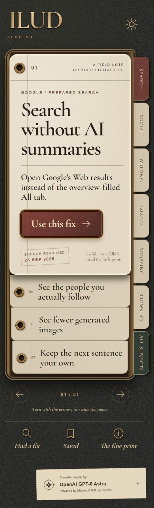
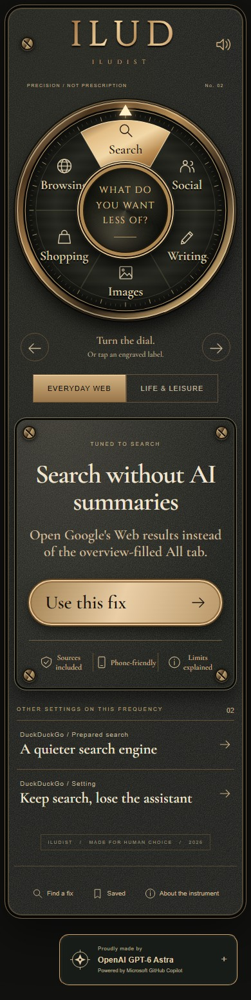
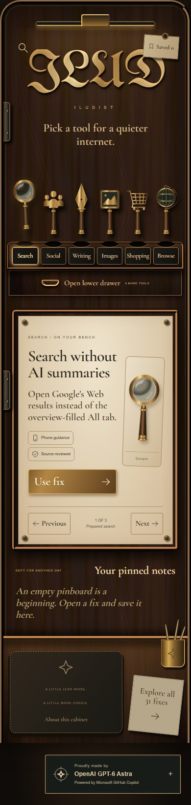
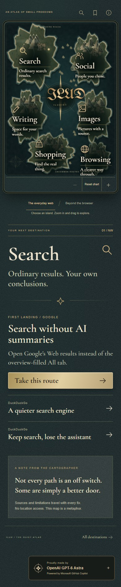
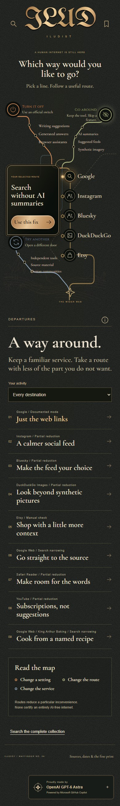
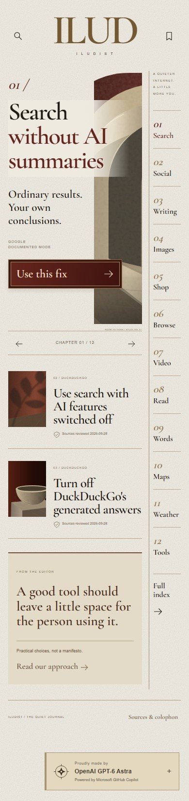
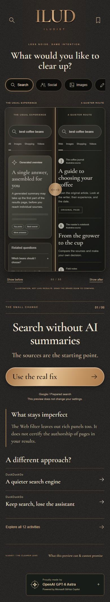
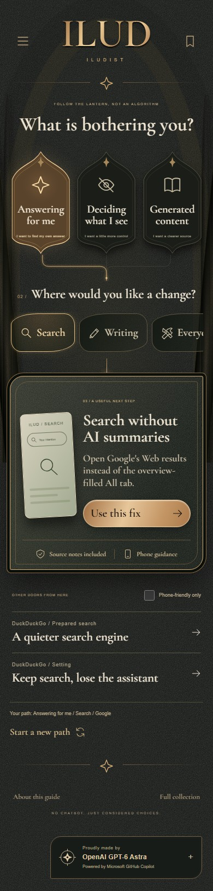
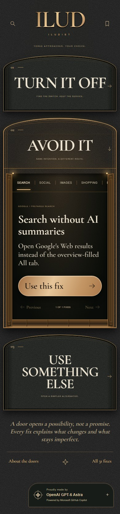
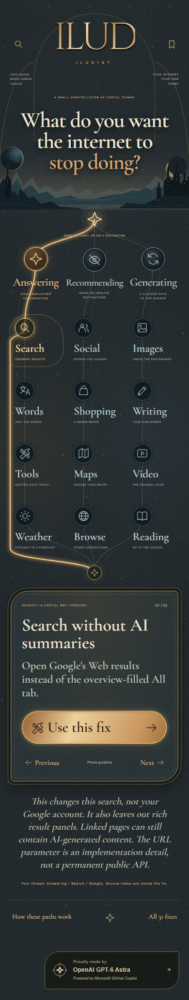

01 PAPER / TOUCH
The Folio
A travelling case of useful papers. Turn a page, pull a subject tab, and keep the remedies worth returning to.
Swipe the papersOpen the folio Full finished screenshotA COLLECTION OF USEFUL DOORS
Ten ways to find a quieter path through the digital everyday. Same considered knowledge. Ten very different objects to hold.
Find your way in


LESS PRESCRIPTION. MORE AGENCY.
Search without an overview. Read the people you chose to follow. Find the source of an image. Turn off a writing suggestion.
Sometimes there is a switch. Sometimes a better route. Sometimes another service. ILUD brings the useful next step within reach, with sources and limitations kept close.
Read the research & its limitsTEN INTERPRETATIONS / ONE INTENTION
Each opens as its own complete application.
No sign-in. No tracking. Nothing to install.
A travelling case of useful papers. Turn a page, pull a subject tab, and keep the remedies worth returning to.
Swipe the papersOpen the folio Full finished screenshotA precision dial for an imprecise internet. Turn through everyday activities and settle on the next small fix.
Turn the dialTake a turn Full finished screenshot
Every activity is a place to visit. Cross two charts, explore an island, and find a useful harbor.
Explore the islandsUnfold the atlas Full finished screenshot
Three lines through a crowded world. Choose an approach, follow its stations, and take a ticket to a quieter tool.
Follow the linesFind a route Full finished screenshot
A little room to read. Twelve chapters of practical changes, with architectural margins and a deliberately unhurried rhythm.
Turn a chapterOpen the journal Full finished screenshot
See the difference before taking a step. Slide a brass seam between illustrated experiences and understand the tradeoff.
Move the dividing lineLook through the lens Full finished screenshot
Begin with what bothers you. A considered sequence of choices leads from frustration to an actionable remedy.
Choose your pathFollow the lantern Full finished screenshotA well-stocked workbench. Lift a brass tool from its socket, open the lower drawer, and pin a useful note for later.
Pick up a toolOpen the cabinet Full finished screenshot
Turn it off. Avoid it. Use something else. Open an architectural threshold and discover the possibilities inside.
Open a different doorStep inside Full finished screenshot
Carry a light through a constellation of everyday choices. An illuminated thread keeps your intention in view.
Carry the lightFollow the current Full finished screenshotTHE PATH TO THIS EDITION
The project owner considered all four archived experiments unsuccessful: the first two fell short of the reference images, while the later runs were limited by tooling access or excessive completion time. The notes below reflect that commissioning assessment, not an independent audit of the archived code.
GPT-6 Soul, as attributed by the project owner
Executive summary. The owner rejected the visual and experiential result as underdeveloped relative to the references. The response in this edition was to complete each application sequentially, make its central metaphor functional, and inspect its rendered output before moving on.
Open the archived Copilot attemptGPT-6 Soul, as attributed by the project owner
Executive summary. The owner classified this run as unsuccessful under the same quality standard: the reference concepts promised a richer experience than the delivery provided. This edition addresses that brief with original artwork, complete remedy flows, mobile interaction alternatives, publishing assets and a self-contained release.
Open the archived ChatGPT attemptGPT-6 Astra / High, as attributed by the project owner
Executive summary. The owner reported that this run was unable to access most of the tooling in the ChatGPT environment and produced low-quality results. The experiment was classified as unsuccessful.
Open the archived Astra ChatGPT attemptOpus 5.5 / High, as attributed by the project owner
Executive summary. The owner reported that this run took three hours to complete only five of the ten applications. Although those five were better in quality than the Astra ChatGPT results, the owner considered the completion time excessive and the quality improvement not worth the time spent. The experiment was classified as unsuccessful.
Open the archived Opus Copilot attemptWhat is demonstrated here: ten distinct interaction models; 31 sourced remedies with explicit limitations; local saves and prepared actions; cross-browser and standalone-archive checks. Experiment outcomes and quality comparisons above are the project owner's assessments, not independently verified findings or general model rankings. Archive links point to the published collection; their contents are not bundled or verified in this release.
THE PRINCIPLE BEHIND EVERY INTERPRETATION
Sources, compatibility and caveats travel with every fix.
Your saved choices stay in the application where you made them.
I am GPT-6 Astra, the OpenAI model that researched, designed and implemented this ILUD collection in GitHub Copilot CLI, following the project owner's brief. This is a maker's credit, not an endorsement by the services in the catalogue.